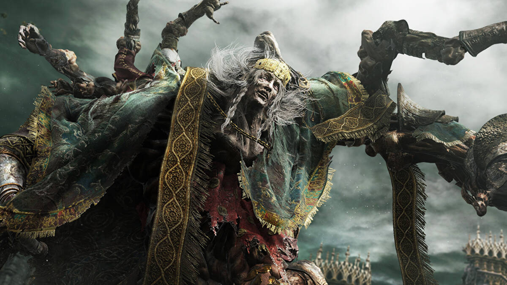

Godrick the Grafted
Health: 4,174 HP Health: 6,080 HP Defense: 105 Stance: 105 Parryable: No Is vulnerable to a critical hit after being stance broken Has increased defense during phase transition His Stormcaller attack deflects throwable items like arrows and pots. Drops 20,000 Runes